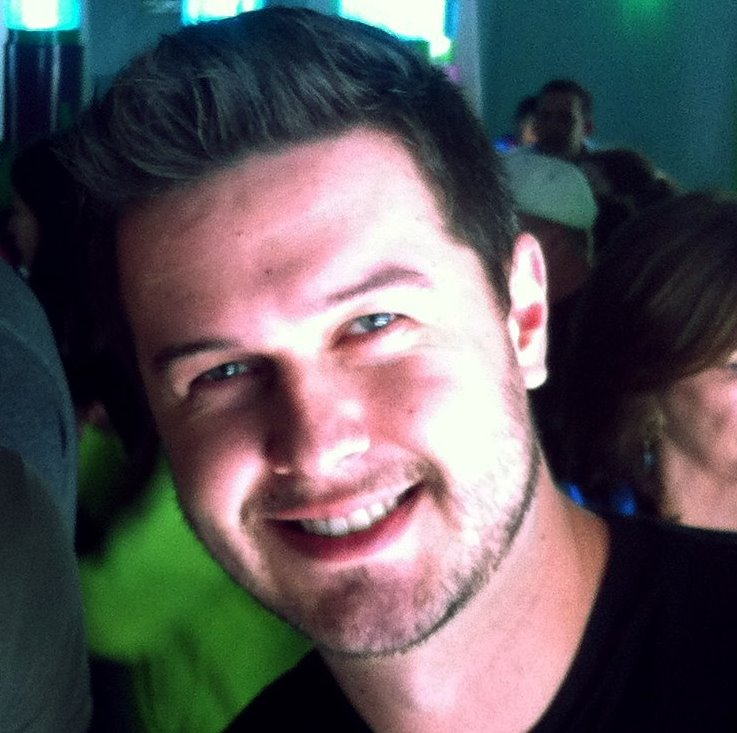

About Me
Hello! My Name is Antonio Kniss and I am working very hard for a career change. I have had the opportunity to work in different fields so far in my life. From being an English teacher for kids back in Brazil to being a flight attendant and flying all over the world.
I am originally from Brazil and I am having the greatest opportunity to call America: Home! I am a single dad of a 3 yeard old Labrador mixed with German Sheperd. Tobie is one of the best things that happened to me here and I love him to the moon and back.
Connect with Me